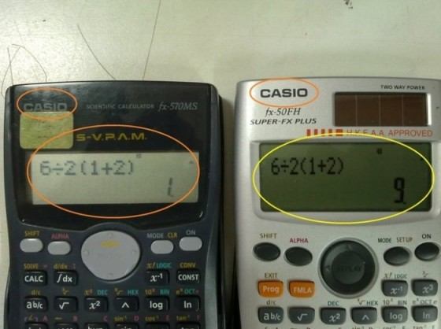
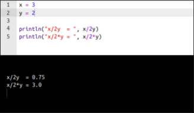

Every few months, it happens again. A post going viral on social media featuring an elementary math expression like this:
\[6 \div 2(1+2) \ ,\]
asking for the result of the operation, or showing the same old figure of two different Casio calculators.

Cue thousands of comments, heated arguments, and friendships ending over whether the answer is 1 or 9. Creators love this topic. It’s the ultimate engagement engine because the barrier to entry is non-existent—it only involves basic arithmetic—yet it makes everyone feel like a genius defending their camp.
Let’s put it down clearly: this isn’t a math problem. It’s a math expression that may lead to wrong reading of the expression (or at most an ambiguous expression, for those who believe in juxtaposition) disguised as a puzzle.
And even more clearer: I’m sure you can use your time in many other more productive and/or more entertaining activities, or just have a relaxing walk or nap.
The Trap: Juxtaposition vs. Strict Serial Logic
The entire “debate” relies on a clash of conventions regarding implicit multiplication (multiplication by juxtaposition, or simply putting terms side-by-side without a \(\times\) or \(\cdot\) operator).
The commonly accepted rule (standard PEMDAS/BODMAS) This is the priority rule we learned in school: in absence of parentheses, first 1) power and exponents, then 2) multiplication and division, and finally 3) addition and subraction. There’s no priority within operations of the same group, and left-to-right priority between neighboring operations of the same group. If you follow this rule, multiplication and division have equal priority. You resolve the parentheses first \((3)\), then divide \(6\) by \(2\), and finally multiply the results:
\[6 \div 2 \times 3 = 9\]
The juxtaposition view (IMF, Implicit Multiplication First) unfortunately, some textbooks, (sloppy) scientists, and “content creators” treat a juxtaposed term like \(2(3)\) as a single, tightly bound monomial. In their view, the juxtaposition acts as an invisible glue, giving it higher priority than explicit division, \(6 \div 6 = 1\)
Because there is no international treaty or international standard governing the “priority of juxtaposition”, both sides can dig their heels into different manual rules, software environments, or calculator firmware versions.
The Golden Rule: if it’s ambiguous, it’s garbage
In professional mathematics, numerical simulation, and software engineering, unambiguous clarity is the ultimate standard. If an expression requires a debate among the target audience, the notation has failed. Full stop. I’m sure you can use unambiguous alternatives: just use them, to avoid losing time and patience later.
So, what are we talking about?
This short post deals with juxtaposition, because some calculators and some programming languages rely on this deprecated - as it’s ambiguous - priority rule.
- Casio calculators: as already shown in the (in)famous picture Figure 1, different models of Casio calculators use different “conventions”
- Julia: allows implicit multiplication and applies IMF priority view, as shown in Figure 2

The Solution
It’s good to know that this evil exists. We also know that we could meet some evil people in our life, that may use it. But once we know it, just don’t use it, and use the golden standard rule: whenever you’re in doubt, use unambiguous expressions. The use of some parenthesis or sign is not that effort!
Relying on the juxtaposition shortcut - across different programming environments or not -, beside its large potential of code ambiguity, behaves exactly like a silent bug waiting to happen.
I don’t want to argue with anyone about PEMDAS for any reason, and you should not either.
I’ve already spent too much words and time on this post. I’ll leave you this citation from themathdoctors.
Since there are different opinions in reputable sources, and no one authoritative source, the best I can do is to point out the ambiguity and recommend avoidance, which is what I’ve been doing for 25 years.
The only people who insist on writing such expressions, in my experience, are Internet trolls who want to start arguments. I choose not to join them, nor to agree with people who predict catastrophe if this isn’t fully resolved. This simply isn’t that important. –
The next time you see one of these posts clogging your feed, don’t comment, don’t choose a side, and don’t feed the engagement algorithm. Or just leave a last comment before blocking the creator, if you smell the logic of click-baiting: just do not confuse math/logic tests with bad contents; just don’t lose your time, patience and energy after them; just claim higher quality. It’s a matter of hygiene.